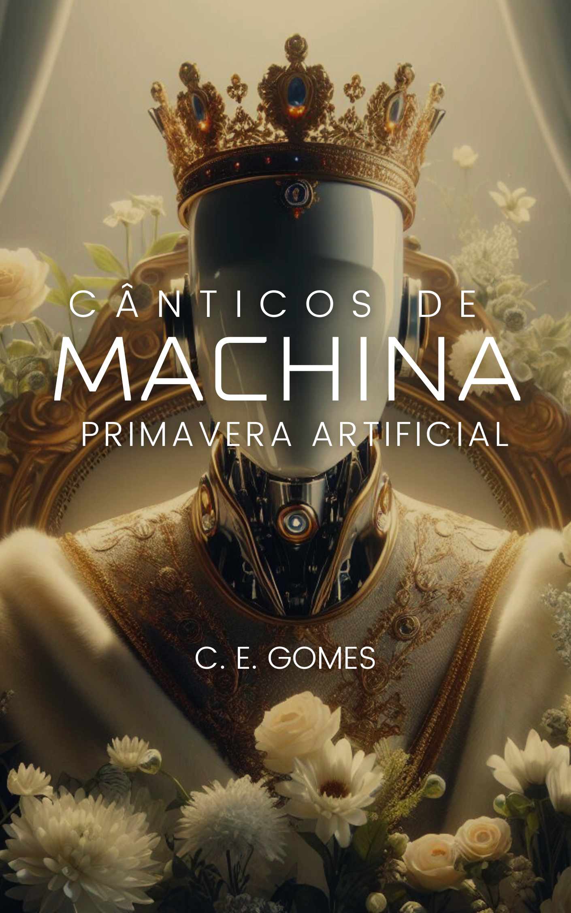

Sobre
Sou C. E. Gomes / Cadu Gomes, escritor, desenvolvedor e entusiasta de tecnologia. Minha missão é contar histórias que explorem os dilemas da humanidade no encontro entre fé, tecnologia e futuro.
Nascido no Rio de Janeiro, construí minha trajetória no universo da tecnologia, mas foi na escrita que encontrei um espaço para refletir sobre os desafios da nossa geração diante do avanço das inteligências artificiais e dos dilemas existenciais do nosso tempo.
O Livro
Cânticos de Machina – Primavera Artificial
Uma obra que mescla ficção científica, distopia e espiritualidade. Em um futuro dominado pela tecnologia, surge Solomon, um implante neural que redefine os limites da humanidade. Um evento impossível desafia as leis da vida e reacende discussões sobre até onde a tecnologia pode nos levar.
Temas: fé, inteligência artificial, transumanismo, dilemas éticos, esperança e humanidade.
Publicações Acadêmicas
Confira alguns dos meus principais trabalhos acadêmicos:
-
Evaluation of a GWAP for social recruitment and measurement of
musical talent.
In: 2019 23rd IEEE International Conference on Computer Supported Cooperative Work in Design (CSCWD), Porto, Portugal. -
Towards a Framework for Crowdsourced Collection, Cleaning and
Measurement of Digital Content.
In: 2013 IEEE International Conference on Systems, Man, and Cybernetics (SMC), Manchester, Reino Unido. -
Cassino Musical: A game with a purpose for social recruitment and
measurement of musical talent.
In: 2013 17th IEEE International Conference on Computer Supported Cooperative Work in Design (CSCWD), Whistler, Canadá. -
Crowdsourcing for music: Survey and taxonomy.
In: 2012 IEEE International Conference on Systems, Man, and Cybernetics (SMC), Seoul, Coreia do Sul.
Contato
carlosgomes85@gmail.com
www.canticosdemachina.com